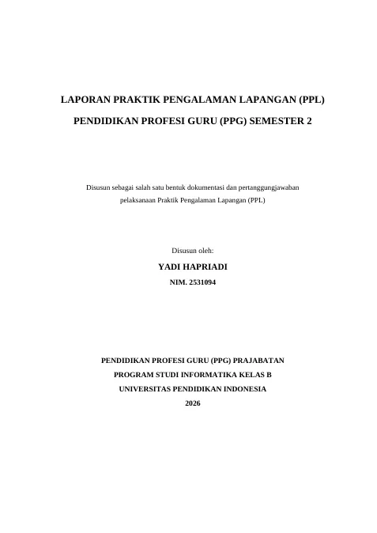
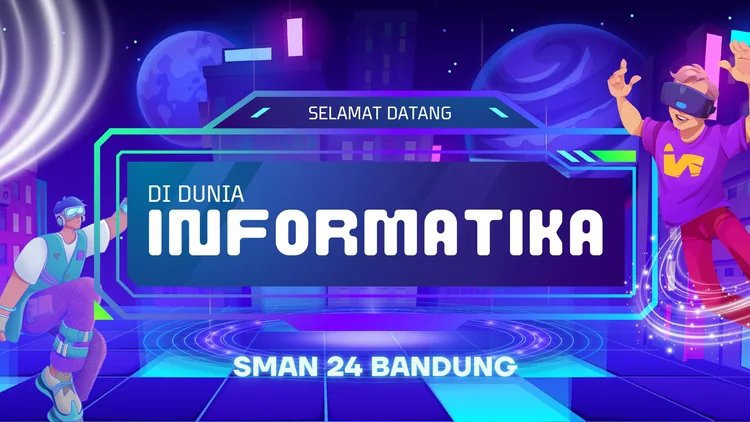
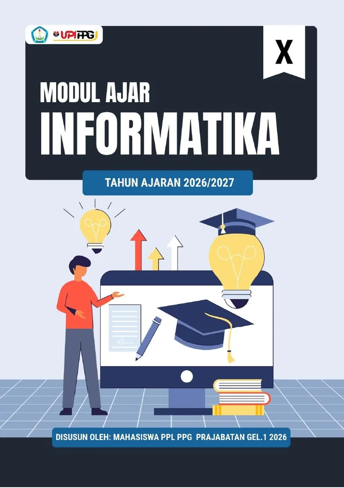
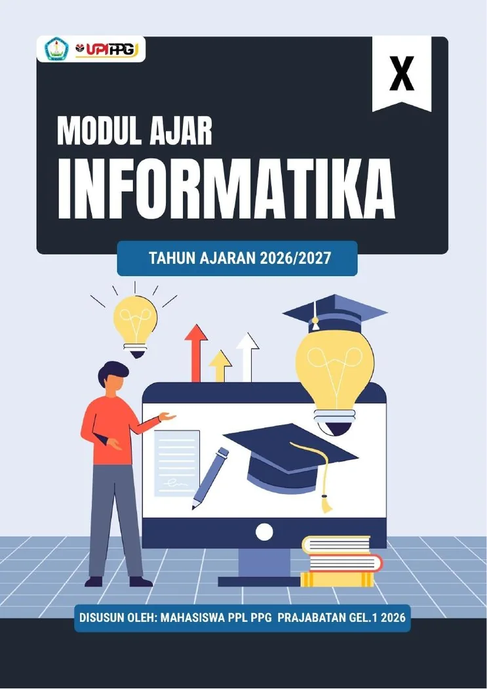
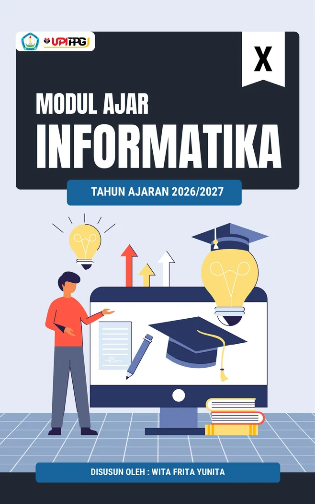
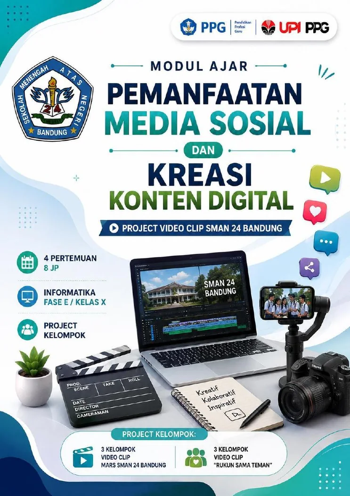
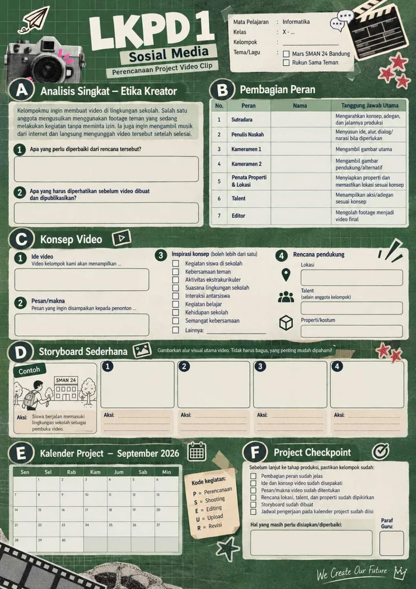
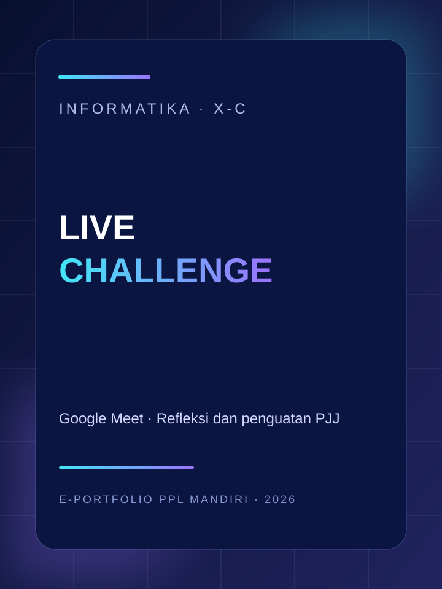

“Saya ingin pembelajaran Informatika membantu murid memahami konsep, berani mencoba, memecahkan masalah, dan menghasilkan karya secara bertanggung jawab.”
TeknologiVideografiContent CreationPendidikan
Saya Yadi Hapriadi, mahasiswa PPG Prajabatan Program Studi Informatika Universitas Pendidikan Indonesia. Portofolio ini mendokumentasikan perjalanan Praktik Pengalaman Lapangan (PPL) Mandiri Semester 2 di SMA Negeri 24 Bandung, dengan fokus pembelajaran Informatika kelas X-C serta keterlibatan dalam kegiatan sekolah.
Latar belakang teknologi informasi dan pengalaman kreatif digital menjadi bekal dalam merancang media serta aktivitas belajar. PPL memberi ruang untuk mengarahkan bekal tersebut pada tujuan pembelajaran, kebutuhan murid, dan tanggung jawab seorang pendidik.
“Saya ingin pembelajaran Informatika membantu murid memahami konsep, berani mencoba, memecahkan masalah, dan menghasilkan karya secara bertanggung jawab.”
Menggunakan informasi kesiapan, minat, dan kebutuhan belajar untuk menyesuaikan contoh, tempo, bantuan, dan bentuk partisipasi.
Menghubungkan konsep Informatika dengan persoalan sehari-hari, simulasi, praktik digital, dan karya kreatif.
Menggunakan pengamatan, asesmen, umpan balik, dan hasil pekerjaan murid sebagai dasar perbaikan pembelajaran.
Pada awal Semester 2, data dihimpun melalui formulir observasi karakteristik murid kelas X-C dan asesmen diagnostik kognitif. Hasilnya dipakai sebagai informasi awal untuk merancang akses belajar dan dukungan yang sesuai.
43 respons murid. Formulir memuat budaya kelas, kondisi sosial dan lingkungan belajar, minat, kesiapan awal, gaya belajar, motivasi, perkembangan emosi dan sosial, moral-spiritual, kondisi fisik, perbedaan individu, dan konteks sosial budaya.
41 respons. Rata-rata skor 12,63 dari maksimum 15, dengan rentang skor 3–15. Materi awal mencakup Berpikir Komputasional, pemanfaatan internet, dan aplikasi perkantoran.
36 dari 41 respons (87,8%) memperoleh skor 10–15. Data menjadi dasar untuk memeriksa prasyarat, bukan label kemampuan tetap murid.
Aspek dengan rata-rata tertinggi dan aspek yang perlu mendapat perhatian lebih.
Memecah tugas menjadi langkah yang jelas, memberi contoh konkret, dan memeriksa pemahaman sebelum melanjutkan.
Memberi waktu berpikir, diskusi kelompok kecil, praktik, tulisan, atau penjelasan lisan agar murid memiliki beberapa jalur untuk menunjukkan pemahaman.
Menggunakan pendampingan dan pengayaan sesuai kebutuhan, sambil memastikan kontribusi serta pemahaman individu tetap terpantau.
Pembelajaran kelas X-C berlangsung setiap Selasa. Dua belas pertemuan berikut disusun sesuai kronologi pelaksanaan dan bahan presentasi yang digunakan.
Materi ini menjadi dasar untuk memahami pemecahan masalah secara sistematis dan terstruktur.
Fokus pada penggunaan media digital secara bijak, etis, kreatif, dan bertanggung jawab.
Penggunaan Microsoft Word untuk menghasilkan dokumen yang rapi, konsisten, dan terstruktur.
Video praktik mengajar Sorting kelas X-C menjadi dokumentasi pelaksanaan pembelajaran. Perangkat ajar Sorting tetap ditampilkan dengan nama penyusun sesuai sampul aslinya.
Modul ajar PjBL empat pertemuan yang disusun oleh Yadi Hapriadi, didukung LKPD, dokumentasi, dan enam karya video klip murid.
Dua pertemuan praktik aplikasi perkantoran—membuat cover pada 29 September dan daftar isi otomatis pada 6 Oktober—dilanjutkan Live Challenge melalui Google Meet pada 13 Oktober 2026 sebagai refleksi dan penguatan PJJ setelah camping pramuka.
Membangun komunikasi awal melalui perkenalan guru dan murid, pengenalan ruang lingkup Informatika, kontrak belajar, pengumpulan data awal karakteristik dan asesmen diagnostik, serta pembagian kelompok.
Murid mengenali empat konsep utama: dekomposisi, pengenalan pola, abstraksi, dan berpikir algoritmik. Contoh dekat dengan kehidupan sehari-hari membantu murid mengurai masalah dan menjelaskan alasan penyelesaian.
Simulasi Linear Search dan Binary Search untuk menemukan data. Murid menelusuri urutan pemeriksaan, menentukan bagian data yang dieliminasi, dan memahami syarat data terurut pada Binary Search.
Murid membandingkan Bubble Sort, Selection Sort, dan Insertion Sort melalui simulasi kartu angka. Aktivitas kelompok memberi peran pengatur kartu, pencatat, pengamat, dan presenter serta ruang untuk melatih PSE.
Mengenali fungsi media sosial, bentuk konten digital, etika kreator, jejak digital, privasi, hak cipta, serta merancang konsep dan pembagian peran proyek video klip.
Melaksanakan pengambilan footage sesuai konsep, storyboard, dan shot list. Pembelajaran menekankan jenis camera shot, kesesuaian adegan, serta etika merekam di lingkungan sekolah.
Menyusun footage, menyesuaikan audio/lirik, menggunakan transisi seperlunya, memeriksa kualitas visual dan audio, mengekspor, serta mengumpulkan hasil karya.
Menayangkan karya, menjelaskan konsep dan proses produksi, menerima umpan balik, memberikan apresiasi, serta merefleksikan pengalaman kerja kelompok dan tanggung jawab digital.
Mengenali fungsi Microsoft Word sebagai aplikasi pengolah kata dan fitur Font, Paragraph, Page Layout, Insert, serta Styles melalui penjelasan dan demonstrasi.
Murid membuat cover dengan memperhatikan ukuran A4, jenis huruf, spasi, margin, susunan informasi, serta tata letak mengikuti contoh dan ketentuan tugas.
Menerapkan Heading 1, Heading 2, Heading 3, membuat Table of Contents otomatis, memperbarui daftar isi, dan memeriksa kesesuaian nomor halaman.
Tantangan interaktif digunakan sebagai refleksi dan penguatan materi secara PJJ setelah kegiatan camping pramuka. Murid mengikuti tantangan melalui Google Meet, menunjukkan respons, dan menjelaskan alasan yang menghubungkan aktivitas dengan konsep Informatika.
Pengalaman PPL juga tumbuh melalui tanggung jawab rutin, pendampingan kegiatan murid, koordinasi dengan pembimbing, dan kontribusi pada kegiatan sekolah. Jadwal rutin yang disampaikan adalah mengajar setiap Selasa dan piket sekolah pada Senin, Rabu, dan Jumat.
Berpartisipasi dalam tugas piket, membantu kelancaran aktivitas sekolah, menjaga ketertiban, serta mendukung layanan dan kerapian perpustakaan.
Mengikuti kegiatan rutin sekolah sebagai bagian dari pembiasaan disiplin, ketertiban, tanggung jawab, dan penghormatan terhadap kegiatan bersama.
Terlibat dalam kegiatan kepramukaan dan pendampingan aktivitas murid di luar pembelajaran kelas.
Mendampingi kegiatan beres-beres dan penataan laboratorium komputer agar ruang serta perangkat lebih siap digunakan.
Membantu pengawasan ujian praktik serta menjaga ketertiban dan kelancaran kegiatan evaluasi di sekolah.
Melakukan konsultasi dan diskusi terkait perangkat, strategi, pelaksanaan pembelajaran, pengelolaan kelas, dan tindak lanjut.
Mengikuti kegiatan pemantauan dan diskusi bersama DPL sebagai bagian dari pendampingan serta evaluasi pelaksanaan PPL.
Mengikuti sosialisasi dan penyampaian informasi proyek kepemimpinan, termasuk konteks pemanfaatan solusi digital untuk kebutuhan sekolah.
Mengikuti kegiatan penarikan dan penutupan pelaksanaan PPL bersama pihak sekolah, Guru Pamong, dan Dosen Pembimbing Lapangan.
Dokumentasi pembelajaran kelas X-C yang digabung sebagai satu galeri lintas materi.
Keterlibatan dalam tugas piket dan dukungan layanan perpustakaan.
Dokumentasi kegiatan rutin sekolah dan pembiasaan disiplin.
Dokumentasi pendampingan kegiatan kepramukaan dan aktivitas murid di luar kelas.
Pendampingan kegiatan beres-beres dan penataan Labkom.
Dokumentasi tugas pengawasan dan dukungan kelancaran ujian praktik.
Dokumentasi konsultasi, pemantauan, dan pendampingan PPL.
Dokumentasi sosialisasi dan penyampaian informasi proyek kepemimpinan.
Artefak ditampilkan melalui sampul dan pratinjau visual agar pengunjung dapat mengenali isi setiap perangkat sebelum membuka dokumen atau slide pembelajaran.

Buka Google Docs ↗Dokumen utama · Google DocsLaporan pelaksanaan PPL Semester 2 di SMA Negeri 24 Bandung, mencakup observasi, pembelajaran Informatika X-C, kegiatan sekolah, refleksi, dan lampiran.
Buka laporan di Google Docs
Buka Canva ↗Orientasi kelas · Pertemuan 1Media pengenalan, kontrak belajar, asesmen awal, dan pembentukan komunikasi kelas X-C.
Buka slide Canva ↗
Buka perangkat ↗Grand materi 1 · Perangkat kelompokPerangkat kelompok; sampul mencantumkan mahasiswa PPL PPG Prajabatan Gelombang 1 Tahun 2026 sebagai penyusun.
Buka Modul Ajar PDF ↗Buka slide Canva ↗
Buka perangkat ↗Grand materi 1 · Perangkat kelompokPerangkat kelompok untuk Linear Search dan Binary Search; atribusi penyusun mengikuti sampul dokumen asli.
Buka Modul Ajar PDF ↗Buka slide Canva ↗
Buka perangkat ↗Praktik terbaik · Siklus 1Praktik mengajar Yadi di kelas X-C didokumentasikan melalui video. Modul ajar yang digunakan merupakan perangkat kelompok dengan nama penyusun pada sampul: Wita Frita Yunita.
Buka Modul Ajar Sorting ↗Buka slide Canva ↗Tonton video praktik Sorting ↗
Buka perangkat ↗Praktik terbaik · Siklus 2 · Perangkat Yadi HapriadiModul PjBL empat pertemuan yang kamu susun. Proyek menghasilkan enam video klip murid: tiga Mars SMAN 24 Bandung dan tiga “Rukun Sama Teman”.
Buka Modul Ajar PjBL ↗Buka LKPD 4 pertemuan ↗Buka slide Canva ↗
Buka LKPD ↗Lembar kerja proyekLKPD untuk perencanaan konsep, pembagian peran, storyboard, shot list, kalender proyek, dan checkpoint produksi.
Buka LKPD PDF ↗ Buka perangkat ↗Grand materi 3 · Perangkat kelompok
Buka perangkat ↗Grand materi 3 · Perangkat kelompokPerangkat kelompok untuk pengenalan fitur Word, pembuatan cover, Heading, dan daftar isi otomatis. Sampul mencantumkan Wita Frita Yunita.
Buka Modul Ajar PDF ↗Buka slide Canva ↗
Buka Canva ↗Penguatan dan refleksi · Siklus 4Tantangan interaktif melalui Google Meet sebagai refleksi dan penguatan pembelajaran PJJ setelah kegiatan camping pramuka.
Buka slide Canva ↗Gagasan platform pembelajaran interaktif yang dikembangkan sebagai tindak lanjut atas kebutuhan pemerataan akses, aktivitas, dan pemantauan belajar murid.
Kunjungi Ruang Informatika ↗Galeri ini menghimpun enam karya video klip murid dalam proyek PjBL empat pertemuan: tiga video Mars SMAN 24 Bandung dan tiga video “Rukun Sama Teman”. Hasil proyek ditampilkan sebagai bukti produk belajar murid, terpisah dari rekaman praktik mengajar.
Dokumentasi enam hasil proyek video klip konten digital kelas X-C dapat dilihat melalui folder Google Drive yang dibagikan.
Buka galeri karya murid di Google Drive ↗Jika pratinjau di samping tidak muncul, buka folder melalui tombol. Pastikan izin berbagi folder diatur agar penilai dapat melihat isi folder.
Rekaman praktik mengajar materi Sorting yang tersedia dan ditautkan sebagai dokumentasi pembelajaran.
Buka video di YouTube ↗Asesmen diagnostik kognitif, survei karakteristik, pertanyaan pemantik, observasi proses, LKPD, hasil proyek murid, presentasi, dan tantangan interaktif digunakan sesuai tujuan pembelajaran. Data asesmen awal tidak dipakai sebagai label tetap murid.
Presentasi visual membantu memberi struktur dan contoh; kartu angka membuat proses sorting terlihat; storyboard dan shot list mendukung pengelolaan proyek; demonstrasi Word memperlihatkan prosedur pengolahan dokumen secara langsung.
Setiap kegiatan PPL memperlihatkan bahwa pembelajaran yang efektif membutuhkan penguasaan materi, pemahaman terhadap murid, pengelolaan kelas, komunikasi, asesmen, serta tanggung jawab di lingkungan sekolah.
Konsep Informatika yang abstrak lebih mudah dipahami ketika murid dapat melihat prosesnya melalui contoh, simulasi, kartu, atau demonstrasi. Aktivitas yang menarik tetap perlu dihubungkan dengan tujuan dan bukti pencapaian yang jelas.
Kesiapan awal dan kepercayaan diri murid beragam. Instruksi yang terlalu cepat dapat membuat sebagian murid tertinggal, sementara bantuan yang tidak terstruktur dapat mengurangi waktu untuk menyelesaikan tujuan inti.
Memeriksa prasyarat, menyampaikan instruksi bertahap, memberi contoh, mengatur peran kelompok, memberi waktu berpikir, memantau pemahaman individu, dan menggunakan umpan balik untuk menentukan tindak lanjut.
Peran guru tidak berhenti ketika pembelajaran selesai. Piket, upacara, pramuka, pendampingan, pengawasan, dan koordinasi membantu membangun tanggung jawab, komunikasi, disiplin, serta pemahaman terhadap budaya sekolah.
Beberapa murid menyampaikan bahwa mereka yang duduk di bagian belakang terkadang merasa kurang diperhatikan. Saat penulis mengajukan pertanyaan secara terbuka, jawaban sering lebih dahulu disampaikan oleh murid yang duduk di bagian depan. Masukan ini menjadi pengingat bahwa respons cepat dari beberapa murid belum tentu mewakili pemahaman dan keterlibatan seluruh kelas. Penulis perlu memeriksa partisipasi secara lebih merata, memberi waktu berpikir, mengatur giliran, menggunakan diskusi kelompok kecil, serta menyediakan pilihan respons lisan maupun tertulis.
Temuan mengenai murid yang belum selalu terjangkau dalam interaksi kelas menjadi salah satu alasan pengembangan inovasi Ruang Informatika. Platform ini dirancang untuk menyediakan materi dalam beragam bentuk, aktivitas interaktif, LKPD, asesmen, forum diskusi, refleksi, dan pemantauan aktivitas belajar. Tujuannya adalah memperluas kesempatan murid untuk mengakses materi, mengerjakan aktivitas, menyampaikan pemahaman, dan memperoleh perhatian berdasarkan aktivitas belajarnya—bukan hanya berdasarkan siapa yang paling cepat menjawab di kelas.
Kunjungi Ruang Informatika ↗Mengidentifikasi kebutuhan murid, merancang pembelajaran, mengelola kelas, melaksanakan asesmen, dan menindaklanjuti hasil belajar.
Menguasai konsep Informatika dan memanfaatkan media, teknologi, serta keterampilan digital secara tepat.
Berkomunikasi, berkolaborasi, mendampingi murid, serta berkoordinasi dengan guru dan warga sekolah.
Menunjukkan tanggung jawab, kedisiplinan, etika, kesediaan menerima masukan, dan komitmen untuk terus belajar.
Bagian ini menampilkan praktik terbaik yang dipilih untuk portofolio, artefak perangkat, media pembelajaran, dokumentasi praktik, serta hasil proyek murid. Pembagian grand materi tetap mengikuti tiga kelompok besar pembelajaran Informatika Semester 2.
Video pembelajaran Sorting kelas X-C menjadi bukti praktik mengajar yang tersedia. Perangkat ajar ditampilkan sesuai dokumen aslinya; penyusun yang tertera pada sampul Modul Ajar Sorting adalah Wita Frita Yunita sebagai bagian dari pembagian tugas perangkat kelompok.
Modul PjBL empat pertemuan yang disusun oleh Yadi Hapriadi dipilih sebagai artefak utama. Bukti yang ditampilkan meliputi modul ajar, LKPD, dokumentasi proses, dan produk video klip murid. Produk murid merupakan bukti hasil proyek, bukan rekaman video praktik mengajar guru.
Siklus 4 ditampilkan melalui dua praktik Microsoft Word—membuat cover dan daftar isi otomatis—serta Live Challenge Informatika melalui Google Meet pada 13 Oktober 2026 sebagai refleksi/penguatan PJJ setelah camping pramuka.